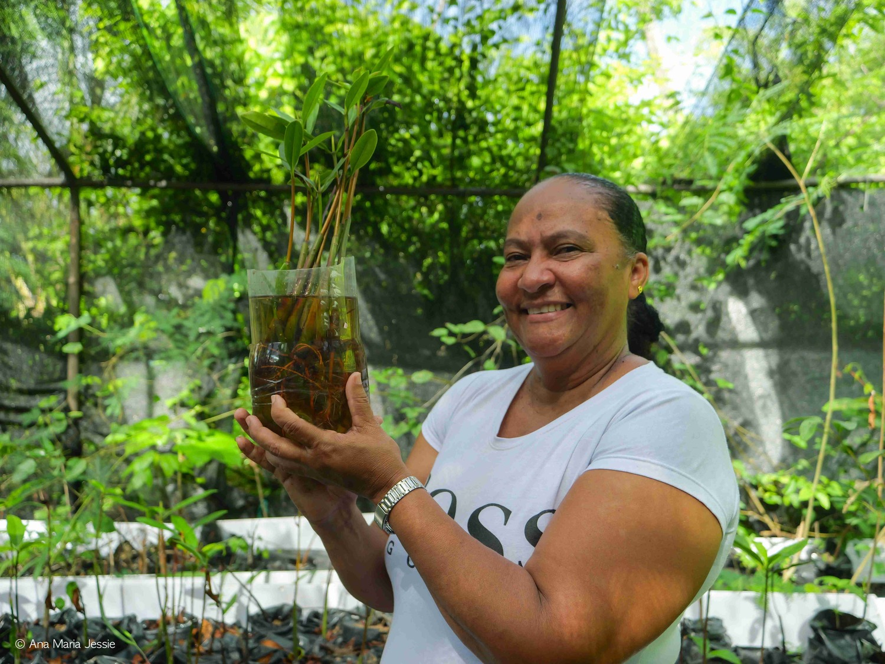

Raíces de resistencia: mujeres raizales que restauran manglares en Santa Catalina

Virginia Webster está de pie en el patio de su casa en la isla de Santa Catalina, bajo un vivero remendado por tubos de hierro oxidados por la salinidad de la mar. Tiene varias mesas de madera en las que están organizados los manglares en bolsas de tierra que apenas comienzan a crecer botando sus primeras hojas verdes. En otra mesa están las semillas de mangles aboyando en envases plásticos llenos de agua donde brotan sus raíces.
Con sus manos señala los manglares que está por trasplantar a la tierra o al mar, y al mismo tiempo se lamenta; hay algunos que se han marchitado, porque entre el trabajo del hospital local de Providencia y los quehaceres de su casa, el tiempo no le da para estar aquí y allá. Tiene que sobrevivir, en una isla donde es imposible sostenerse con el salario mínimo y la crisis climática con desastres ambientales, como el huracán Iota, llegan a empeorarlo todo.
Pero ve los manglares que van floreciendo, la barrera marchitada con huecos gigantes que tiene solo mangles secos, y se recuerda a ella misma por qué empezó a sembrar de manera voluntaria estas plantas anfibias. “Esta idea me nació después del huracán Iota, los manglares protegieron a toda la comunidad y a los animales”, cuenta. La línea de manglares que bordea la isla de Santa Catalina fue una barrera contra la fuerza de las olas, que golpeaban la orilla con más de siete metros de altura, y del viento, que con fuerza se llevaba todo a su paso.
La noche del 15 de noviembre del 2020, el huracán Iota —de categoría cinco— destruyó el 98 % de la infraestructura de Old Providence and Ketlina (Providencia y Santa Catalina) y el 90 % de su ecosistema marino y bosque seco tropical que conforma el archipiélago de San Andrés, Old Providence and Ketlina, localizado en el Caribe occidental, a cerca de 750 kilómetros del territorio continental colombiano.
Cuando Webster se encontró con el desastre, el 16 de noviembre, lloró mucho al ver que su casa no estaba ni la de los vecinos. Todo lo que había construido en sus 53 años se lo llevó la mar furiosa. “Yo lloré, lloré mucho. Lo perdimos todo. Todo lo que uno ha trabajado para tener toda su vida lo perdimos en un solo día”.
El huracán Iota causó la muerte de tres personas y dejó a 2.347 familias damnificadas, de acuerdo con el Registro Único de Damnificados (RUD). En cuanto a infraestructura, dejó un saldo de 1.088 viviendas colapsadas, 877 averiadas y 150 equipamientos turísticos afectados, según la Veeduría Cívica Old Providence.
Mientras las dos islas intentaban recuperarse y sobrevivir en medio de la ausencia histórica del Estado, Webster agradeció a Dios y a los manglares, y junto a seis mujeres raizales de su comunidad decidió buscar semillas en los manglares del suroeste de Providencia donde el manglar se enraiza con la tierra firme.
“Los manglares de Santa Catalina crecen a orillas de la mar y cuando la semilla cae, la corriente se la lleva. Por eso junto a mis compañeras nos metimos manglar dentro, buscábamos las semillas y las poníamos en agua, para que comenzaran a echar raíces”, explica Webster mientras señala los tipos de manglares. “Aquí tenemos cuatro clases de manglares: está el rojo que crece más a la orilla, o sea al nivel del mar; el negro; el blanco, y el botón. Esos son los que existen en nuestra isla y todos son importantes”, explica Webster al tiempo que toca las hojas de los manglares que están floreciendo en su patio.
Aunque han pasado cinco años del paso del huracán Iota en las dos islas, la barrera de manglares de Santa Catalina no se ha recuperado totalmente; de esos manglares verdes que de lejos parecían ser uno junto a la montaña, solo quedan cayos distanciados que intentan sobrevivir y donde los cangrejos apenas encuentran refugio.

“Antes de que pasara el huracán, los manglares eran muy frondosos. Cobijaban gran parte de las zonas costeras, no se alcanzaba a ver a través de ellos, no entraban vientos fuertes, estaban llenos de cangrejos, de aves. Eran altos y formaban parte del paisaje”, dice Paola James, trabajadora social y lideresa raizal de Providencia y Santa Catalina.
El biólogo marino, Fernando Cárdenas, quien trabaja actualmente con macroalgas marinas, explica que los manglares tienen varias funciones ecosistémicas y costeras que son clave en comunidades de primera línea del cambio climático. “La primera es que fungen como una barrera de protección física contra el oleaje y los vientos que vienen de ultramar. Con el arrecife de coral el oleaje pierde el 70 % de su fuerza, y el restante se ve contrarrestada por los manglares”, sostiene.
Asimismo, James explica que los manglares son protectores de comunidades insulares: “Los manglares garantizan la vida en este lugar; hacen que los vientos no lleguen de forma directa. Santa Catalina está en la parte norte, entonces recibe bastantes vientos y la marea sube con más facilidad. Los habitantes están al nivel del mar prácticamente. Es fundamental restaurarlos para la vida y para mantener la salud de ese lugar”.
Para las mujeres raizales que hacen esta labor comunitaria es importante que los manglares rojos florezcan y no mueran, debido a que este tipo es más resistente a tormentas y huracanes porque sus raíces se agarran con fuerza a la tierra.
Después de poner las semillas de manglares por 15 días en envases de agua, Webster las pasa a bolsas de tierra donde van a empezar a sostenerse y crecer hasta que comienzan a echar hojas. “Los manglares que no son rojos los trasplantamos directamente sin aclimatarse”, explica. En cambio, los rojos deben ponerse por aproximadamente diez días a la orilla del mar para que se familiaricen con su hábitat, puedan ser trasplantados y tener un crecimiento sano.

Virginia Webster sostiene el manglar rojo que apenas comienza a florecer. Foto: Ana María Jessie.

Virginia sostiene el manglar que comienza a echar sus raíces en agua. Foto: Ana María Jessie.

Hojas de manglares que apenas empiezan a florecer. Foto: Ana María Jessie.
Una barrera que cuida la comunidad, la biodiversidad y la memoria raizal
Cinco años atrás, si te dedicabas a observar la bahía de la mar azul profunda, que hace que la isla de Providencia y Santa Catalina se miren de frente, no lograbas ver desde Providencia las casas de un solo piso y de dos. Tampoco se alcanzaban a ver el bar, la tienda y la única calle principal de Catalina, donde no transitan motos ni carros. Solo personas raizales caminando y turistas insolados observando los managuares que vuelan sobre el puente, las lanchas de pescadores manejadas también por mujeres, el oleaje suave del agua salada guiado por la marea y el viento que llega para llevarse el calor y hacer que la sofocación no se sienta.
Para James los manglares vienen siendo una de las barreras reales y tangibles frente al cambio climático, se convierten en la protección del maritorio, pero también en sitios de memoria. “Para mí, son sitios donde se gesta la vida y donde la biodiversidad se hace posible, porque también son espacios naturales donde muchas especies se pueden proteger, desde las más pequeñas hasta las más grandes y hasta las humanas. Es como un lugar que nos reúne en esa protección y nos encuentra con los seres que no son humanos”, dice James.
Webster también resalta que muchas aves que llegaban a anidar, ahora solo usan el manglar de paso; se trepan en sus ramas, reposan y se van porque no consiguen un lugar apto para quedarse. “En otros años las aves anidaban en los manglares, los peces ponían sus huevos, crecían y después se iban para el océano, lo mismo las langostas, los tiburoncitos, también anidaban ahí. La barrera es un sustento para ellos y es una protección para la humanidad”, señala la lideresa.
De la misma manera, Cárdenas asegura que “a nivel de eventualidades climatológicas y atmosféricas, los manglares tienen una función importante, pero también tienen que ver con la seguridad alimentaria, porque los manglares son como las sala cuna de muchas especies que anidan, tienen los primeros estadios de vida y después, pasan a otros ecosistemas”.
El 10 de noviembre de 2000, el Archipiélago de San Andrés, Providencia y Santa Catalina, fue declarado Reserva de Biosfera con el nombre de SEAFLOWER, es decir, que fue reconocida como un territorio especial de alto valor ecológico, cultural y biológico único. Esta declaración compromete al Estado colombiano a preservar especies, hábitats y ecosistemas, así como asegurar un equilibrio entre la conservación y el bienestar del pueblo raizal para evitar la degradación ambiental de la reserva.

De acuerdo a los datos de la Corporación para el Desarrollo Sostenible, Coralina, el Archipiélago cuenta con 133 hectáreas de manglares en San Andrés y 53 hectáreas en Old Providence y Santa Catalina. Además, la región se define como un área secundaria de aves endémicas y un centro de alto o muy alto endemismo marino; es decir de especies que solo habitan estas zonas. Sus bosques secos tropical y manglares se convierten en lugares de anidación para algunas aves marinas, como las fragatas, los piqueros y gaviotines.
Trabajar colectivamente para reforestar la barrera natural
Todavía en el tendal donde reposan las mesas con manglares que apenas nacen, Webster dice que cada vez que camina a la orilla de la barrera de manglares de Santa Catalina se pregunta y se repite: “Si llega otro huracán, ¿quién nos va a proteger?”. Y la respuesta la consigue en el trabajo colectivo que pueda realizar la comunidad junto a la institucionalidad.
“A mí me gusta sembrar. Acá he sembrado yuca, plátano, tomates y ahora manglares. Pero necesitamos que las demás personas se unan a este trabajo, sé que necesitamos la plata para poder sobrevivir porque la situación en las islas está difícil, pero tenemos que sacar tiempo para poder seguir con el trabajo”, agrega.
El informe de Climate Central El cambio climático aumentó la velocidad del viento en todos los huracanes del Atlántico de 2024 advierte que el año pasado los huracanes del Atlántico alcanzaron vientos máximos más fuertes debido al calentamiento global. Esto elevó la intensidad y frecuencia de las tormentas entre tres y 14 millas, lo que podría implicar daños exponencialmente mayores para las comunidades costeras, por lo que se necesitan mejores adaptaciones urgentes en infraestructuras, sistemas de alerta y políticas de resiliencia ambiental y social en estas zonas.
De la misma manera, Webster explica que hace tres años han trabajado con la organización ambiental Masbosque y la empresa de Agrocentro, pero son proyectos cortos sin continuidad. “Yo trabaje con ellos como técnica, pero la continuidad es importante, los manglares duran de 35 hasta 40 años para crecer. Por eso el trabajo debe ser estable. Los manglares que están creciendo los hemos sembrado nosotras, pero las personas de los proyectos no vinieron más. Yo no soy alguien que se va a sentar a escribir proyectos porque no sé mucho de eso. Pero si me dicen ‘métete al manglar’ yo lo hago, porque es lo que me gusta”, señala Webster.

Manglares en climatización para ser trasplantados. Foto: Ana María Jessie.

Manglares que apenas comienzan a crecer. Foto: Ana María Jessie.
Entre manglares que apenas florecen y raíces que germinan, Webster dice que estás plantas fueron sembradas por sus ancestros que buscaban las semillas y los sembraban a la orilla de las islas como una forma de protegerse de la marea. Por eso considera que es importante que las generaciones de ahora lo sigan haciendo. “Seguir sembrando los manglares debe ser una prioridad. Yo quiero ver que eso allá afuera crezca, que se vuelva a ver como era antes para que nos pueda seguir protegiendo”.
Este artículo hace parte de la beca de producción periodística entregada por Mutante, con apoyo de la Fundación Heinrich Böll, a integrantes de la comunidad MUTUA: Movimiento de Cuidados para Periodistas Ambientales. Puedes leer todos los contenidos del especial Historias desde los bordes de la crisis climática siguiendo este enlace